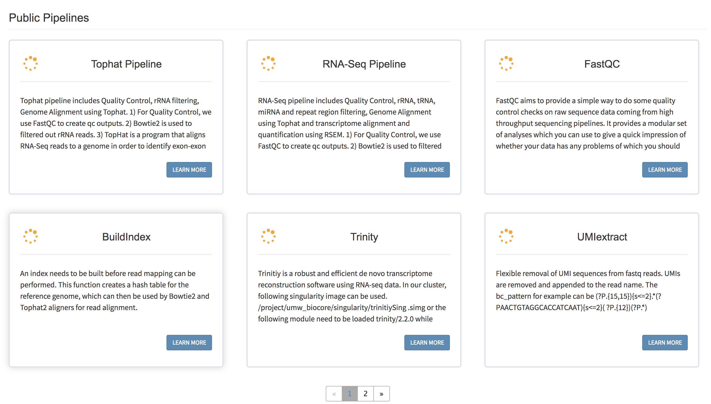
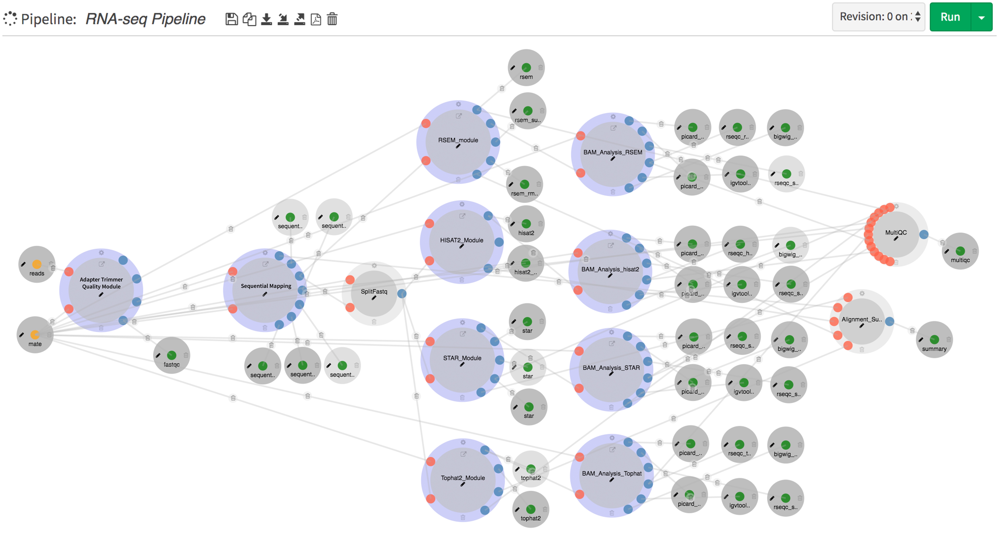
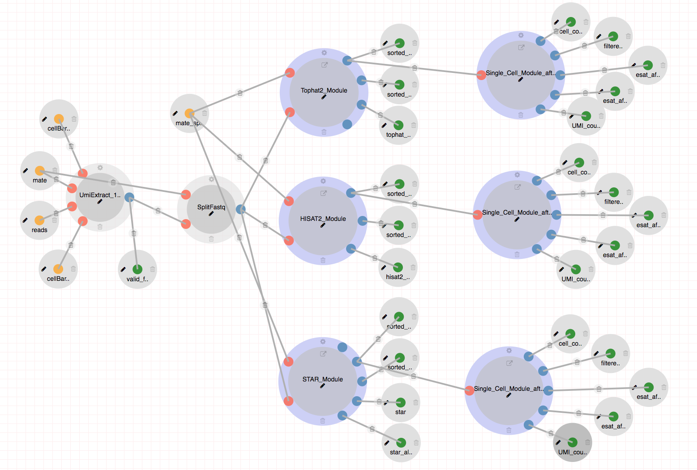

Pipeline Examples¶
There are numerous publicly available pipelines and processes exist in DolphinNext website. In the main page, you may click on Learn More button and investigate the pipelines you interested. In order to reach process details just click settings button at the top of the process circles.
RNA-Seq Pipeline¶

RNA-seq pipeline includes Quality Control, rRNA filtering, Genome Alignment using HISAT2, STAR and Tophat2, and estimating gene and isoform expression levels by RSEM and featureCounts.
- Steps:
- For Quality Control, we use FastQC to create qc outputs. There are optional read quality filtering (trimmomatic), read quality trimming (trimmomatic), adapter removal (cutadapt) processes available.
- Bowtie2/Bowtie/STAR is used to count or filter out and estimate the abundance of both standard and predefined sets of genomic loci (e.g. rRNAs, miRNAs, tRNAs, piRNAs, snoRNAs, ERCC ).
- RSEM is used to align RNA-Seq reads to a reference transcripts and estimates gene and isoform expression levels.
- HISAT2, STAR and Tophat2 is used to align RNA-Seq reads to a genome. Optional estimation of gene and isoform expression levels could be done by featureCount.
- If the user opted to perform genomic alignments the pipeline reports overall quality metrics such as coverage and the number of mapped reads to different genomic and transcriptomic regions These reports rely on Picard’s CollectRNASeqMetrics program (Broad Institute, n.d.) and the RSeQC (Wang, Wang, and Li 2012) program.
- Optionally you can create Integrative Genomics Viewer (IGV) and Genome Browser Files (TDF and Bigwig, respectively)
- The RNA-Seq pipeline returns a quantification matrix that includes the estimated counts, and transcript per million (TPM) for each gene and for each annotated isoform. These matrices are the input to differential gene expression analysis and can be uploaded directly to an embedded instance of our DEBrowser software which allows interactive exploration of the resulting data (Kucukural et al. 2019).
ATAC-Seq and ChIP-Seq pipeline¶


DolphinNext offers pipelines to process libraries for the processing of ChIP-Seq and ATAC-Seq data. These two pipelines share most processes and only differ at very specific points. They also share all data preparation steps with the RNA-Seq pipeline and indeed both rely on the very same processes for read filtering, read quality reporting and alignment to desired genomic locations.
- For Quality Control, we use FastQC to create qc outputs. There are optional read quality filtering (trimmomatic), read quality trimming (trimmomatic), adapter removal (cutadapt) processes available.
- Bowtie2/Bowtie/STAR is used to count or filter out and estimate the abundance of both standard and predefined sets of genomic loci (e.g. rRNAs, miRNAs, tRNAs, piRNAs, snoRNAs, ERCC ).
- A short read aligner Bowtie2 is used to align reads to a genome. (Langmead and Salzberg 2012). For large input files such as those typically obtained from ATAC-Seq, alignments are speed up by splitting the files into smaller chunks followed by parallel alignments of them.
- The pipeline then allows users to estimate and remove PCR duplicates using Picard mark duplicates (Broad Institute, n.d.) function and Samtools (H. Li et al. 2009) using merged alignments.
- For ATAC-Seq specifically the pipeline calls accessible chromatin regions by estimating the the Tn5 transposase cut site by first positioning on the 9-th base upstream of the 5’ read end then extending by 29-bases downstream. This extension process has been shown to more accurate reflect the exact position that was accessible to transposase (Donnard et al. 2018; Buenrostro et al. 2013). Once each read has been shortened, Peaks are called identically in both the ChIP-Seq and ATAC-Seq using MACS2 (Zhang et al. 2008).
- When processing several samples together, the ATAC and ChIP pipelines provide consensus peak calls by merging all peaks individually called in each samples using Bedtools (Quinlan and Hall 2010). The number of reads in each peak location are then quantified using Bedtools (Quinlan and Hall 2010) coverage function.
- As a result, ATAC-Seq and ChIP-Seq pipelines also generates a matrix that has the count values for each peak region and samples. This matrix can be uploaded directly to the embedded version of DEBrowser (Kucukural et al. 2019) to perform differential analysis or downloaded to perform other analysis.
10X scRNA-Seq Pipeline¶
The 10x scRNA-Seq pipeline involves demultiplexing, alignment, filtering, and UMI counting.
Steps:
- Umitools (https://github.com/CGATOxford/UMI-tools) is used to extract valid reads by checking cell barcode list. By default, input sequence, is found on only the R2 side of the reads are sent to split process.
- Fastq files are then splitted by the desired number of reads in each chunk (eg. 2000000) in order to enhance the speed of the alignment. Splitted fastq files are then aligned by STAR and merged by samtools.
- Next, a python script (countUniqueAlignedBarcodes_fromFile.py) counts the number of aligned reads from each cell barcode and saves the counts to a file.
- In the next step, a Python script (filter_lowCountBC_bam_print.py) uses the file produced in the previous step to remove the reads in the bam files from cell barcodes with fewer than a predefined cutoff value of alignments (eg. 3000) to reduce both memory requirements and output file sizes in the remaining steps.
- ESAT then aligns exonic reads to annotated transcripts, uses the UMIs to remove PCR duplicates and creates a UMI distributions table containing the number of reads aligned to each transcript for each cell for each UMI. Then, a python script (cleanLowEndUmis.py) identifies singletons (UMIs from a transcript in a cell with only a single alignment) and merges them with multi-count UMIs if they differ by only a single base in order to reduce overcounting transcripts in high-expression genes and reduce noise in low-expression genes. This step produces the final output matrix of genes x cells used for downstream analysis and visualization.
- Finally, the summary metrics to describe sequencing quality and various characteristics of the detected cells are reported such as the number of cells, the mean reads per cell, and the median genes detected per cell.
Outputs:
- UMI table: The output file (*_umiClean.txt) is tab separated Gene/Transcript vs Cell Barcode matrix filled with count data as shown at below.
| gene | ATCAATCGCGAACCGA | ACCCTCAACTCAAACA | ACTCATACCCGGAAAT |
|---|---|---|---|
| RNF14 | 0 | 0 | 0 |
| MZT2B | 0 | 2 | 8 |
| SPN | 12 | 3 | 4 |
piPipes¶
piPipes is a set of pipelines developed in the Zamore Lab and ZLab to analyze piRNA/transposon from different Next Generation Sequencing libraries such as small RNA-seq, RNA-seq, Genome-seq, ChIP-seq, CAGE/Degradome-Seq. Please see their Wiki pages (https://github.com/bowhan/piPipes/wiki) for the original content.
These pipelines are loaded to DolphinNext to facilitate their usage. An singularity image is provided (shub://UMMS-Biocore/piPipes_singularity) where all the neccessary programs are installed to execute the piPipes.